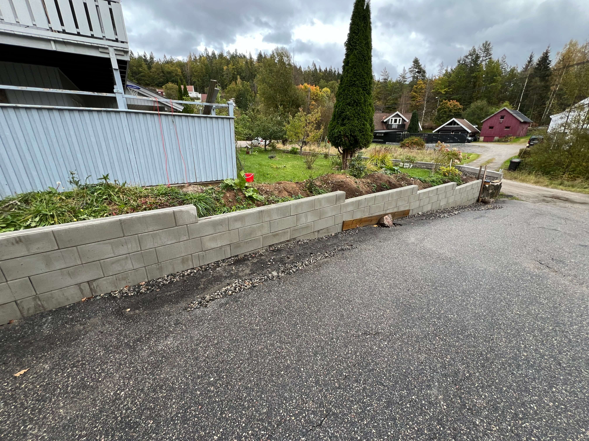
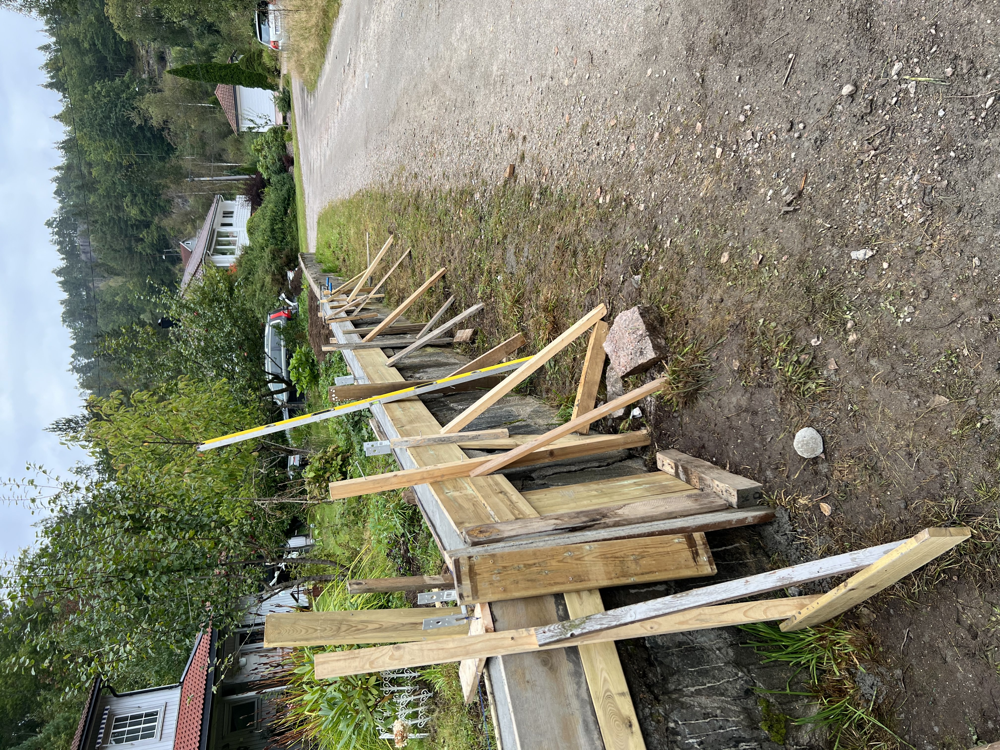
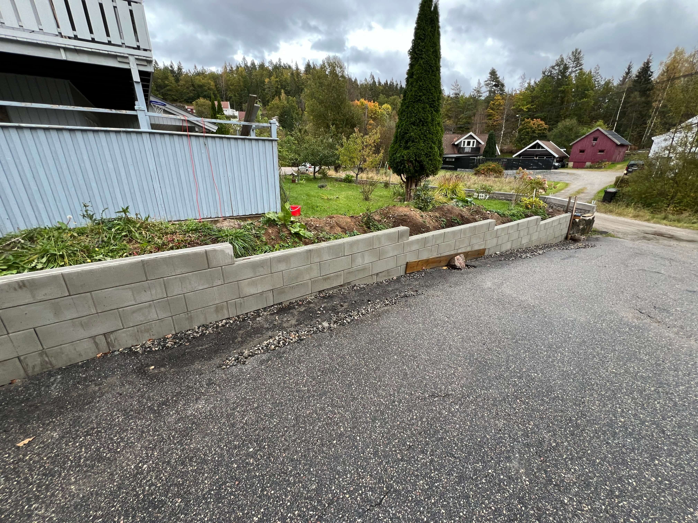
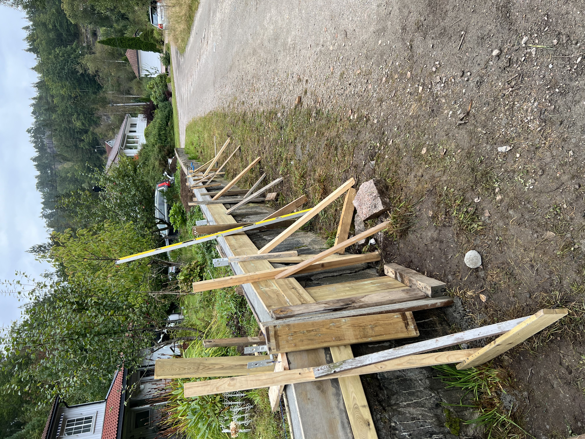

Past Experience
Vekter hos PSS Securitas
I rollen som vekter var jeg ansvarlig for å sikre trygge omgivelser på ulike arrangementer og oppdrag. Jeg overvåket adgang, håndterte konflikter og fulgte prosedyrer nøye, samtidig som jeg tok raske beslutninger under press. Erfaringen styrket min evne til kommunikasjon og samarbeid i krevende situasjoner.
Nordisknet - medstifter
Nordisknet var et bedriftsforsøk jeg og medstudenter fra IT-og informasjonssystemer startet i 2024. Deltok i oppstart av lite prosjekt rettet mot småbedrifter. Arbeidet med struktur, brukeropplevelse og kommunikasjon mellom tekniske og ikke-tekniske parter. Erfaring med planlegging, prioritering og samarbeid i små team med begrensede ressurser.
Betongarbeid
 



Bildene viser et betongprosjekt der jeg utførte det meste selv, med hjelp fra venner ved behov. Jeg gravde og klargjorde området, bygget forskaling, la armeringsjern og støpte betongen for å sikre stabilitet og lang levetid. Prosjektet ga erfaring med måling, blanding, støping og herding, og ga praktisk innsikt i konstruksjon og nøyaktig utførelse. Planen videre er å bygge en bod på betongfundamentet.
Bygging av nytt gjerde
Bildene viser progresjonen av bygging av et nytt gjerde rundt en eiendom. Først forsterket jeg det eksisterende betongfundamentet ved å reparere sprekker og svakheter. Deretter gravde jeg nye hull for gjerdepælene, sørget for korrekt høyde og jevn fordeling, og støpte betong for stabilitet. Etter herding monterte jeg gjerdeseksjonene, og brukte betongblokker som fundament på én side av hagen (ca. 18 meter). Prosjektet krevde nøyaktighet, fysisk arbeid og problemløsning, og ga verdifull erfaring innen måling, konstruksjon og praktisk bygging.
Wirali
Wirali var det første ENK jeg startet i 2023. .Jeg startet Wirali som en liten bedrift innen IT-tjenester, webutvikling, markedsføring og digital merkevarebygging. Jeg planla og leverte tjenester til små bedrifter og enkeltpersoner, inkludert nettsideutvikling, vedlikehold og generell IT-støtte. Jeg utviklet en nettside for å promotere tjenestene og nå ut til kunder, og fikk verdifull erfaring med entreprenørskap, kundeservice, markedsføring og tidsstyring. Prosjektet ga også innsikt i implementering av digitale salgsprosesser og CRM-systemer.
Kjøleteknikk

Som lærling hos kjøletekniker deltok jeg i installasjon, vedlikehold og reparasjon av kjøle- og frysesystemer. Jeg lærte å identifisere feil, følge sikkerhetsrutiner og dokumentere tekniske oppgaver, samtidig som jeg jobbet selvstendig med mekanikk, montering, elektrisk tilkobling og systemtesting.
Årstudium i IT og Informasjonssystemer
GitHub: https://github.com/Christiata
Courses:
- The Role of Digitalization within Future Societies
- Digital Interaction Design
- Introduksjon til samskaping i informasjonssystemer | An Introduction to Co-Creation in Information Systems
- Datakommunikasjon og operativsystem | Computer Communication and Operating Systems
- Objektorientert Programmering | Object-Oriented Programming (Java)
- Bedriftsøkonomi | Business Economics
- Organizational Theory
Gjenvinningsoperatør
I arbeidet som operatør håndterte og sorterte jeg materialer på produksjonslinje, samtidig som jeg overvåket maskiner og prosesser for effektiv drift. Arbeidet ga meg erfaring med rutineoppgaver i fysisk krevende miljøer, med fokus på HMS, nøyaktighet og høy arbeidskapasitet.
Laget en server av en gammel datamaskin
Jeg bygde en server fra en eldre datamaskin ved å installere en lettvekts Linux-distribusjon og konfigurere nødvendige tjenester, inkludert webserver (Apache), database (MySQL) og FTP-server. Jeg tilpasset BIOS-innstillinger, sikret serveren med brannmur og satte opp fjernstyring via SSH. Prosjektet ga praktisk erfaring med systemadministrasjon, nettverkskonfigurasjon og sikkerhet.
Reparasjoner av både maskinvare og programvare
Gjennom årene har jeg reparert og feilsøkt datamaskiner, rutere og telefoner for venner og familie. Dette inkluderer bytte av komponenter som harddisker, RAM og strømforsyning, reinstallasjon av operativsystemer, fjerning av skadelig programvare og optimalisering av systemytelse. Jeg har også erfaring med nettverksoppsett, ruterkonfigurasjon og tilkoblingsproblemer.